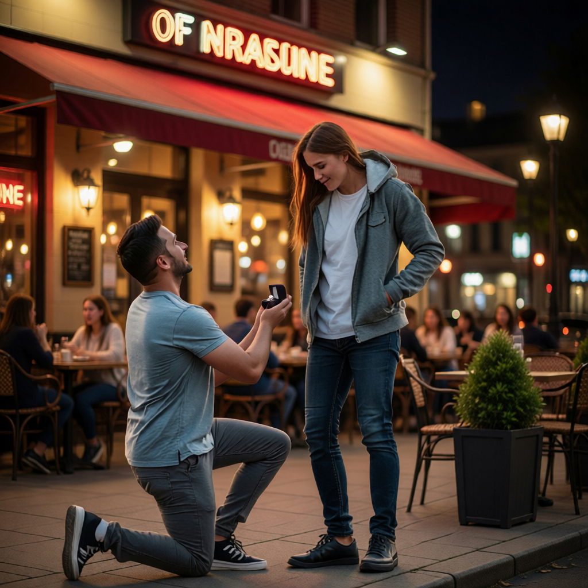

What a crazy week! I
Sophie's birthday. I
a job.
Oh, and I almost didn't ask Sophie to marry me!
I a ring for
Sophie on Saturday morning. I wanted to ask her to marry me that night.
So I invited her over, cooked a special dinner, and
her favorite dessert.
I nervous, but when She
arrived, she said she a cold and
tired. Not the right mood for "Marry me."
She straight home after dinner.
She didn't even eat my chocolate cake!
I had an important interview on Wednesday - I didn't get Sophie's cold, thank goodness
- and I got the job! When I texted Sophie the good news, she texted back, "Let's
have dinner on Friday to celebrate!
Perfect, right? Wrong. We went to our favorite restaurant. Before the server
showed us to our table, Sophie
some friends, and we all together.
I didn't want to ask her in front of all our friends.
After we the restaurant, Sophie
borrowed my jacket, (Oh, no! The ring!) She
her hands in the pocket and
the box!
"Oh, you remembered my birthday!" she said (Oh, no! Her birthday!) Then she
opened the box. Thinking fast, I dropped to one knee. "Happy birthday, Sophie!
Will you marry me?"